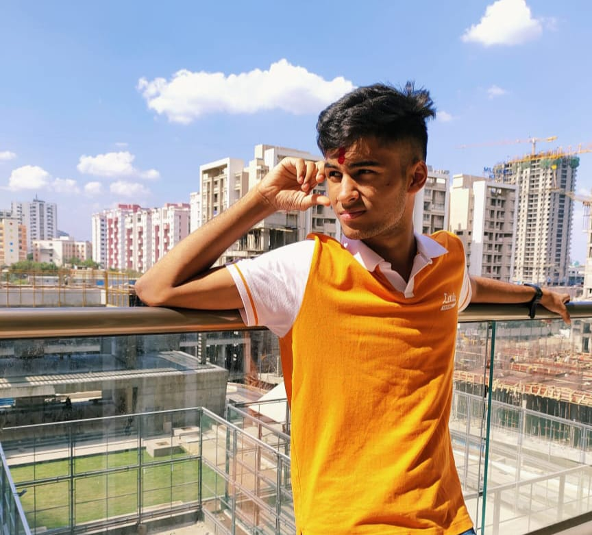

So you want to know about me? Great!
Hello! My name is Aryan Prakhar. I come from the beautiful city of Mathura, known as the land of Lord Krishna. From a young age, I developed a profound fascination with computers and embarked on a journey to explore their vast world.
One of my earliest passions was game development using Unity and C#. The ability to create immersive experiences and bring ideas to life through interactive gameplay truly captivated me.
Alongside game development, I also found joy in blogging and decided to share my thoughts and opinions on PrudentOpinions.com. It became a platform where I could express my passions and discuss the things I truly loved.
After successfully completing JEE (and KVPY, NDA, IOQA, IOQB,etc) , I dived back into the field with renewed enthusiasm. Currently, my focus has shifted towards the captivating realm of Machine Learning. The ability of machines to learn, adapt, and make intelligent decisions fascinates me, and I am committed to exploring its potential to create innovative solutions.
Beyond my technical pursuits, I am on a quest to find like-minded individuals who share my passion for development. I believe that connecting with individuals who have similar interests and aspirations can lead to a fulfilling and inspiring journey.
If you resonate with my story and share a love for the fascinating world of technology, don't hesitate to drop me a "Hi" at LinkedIn.
Thank you for visiting my portfolio, and I hope you enjoy exploring my projects and achievements. Together, let's embark on an exciting and transformative development journey.
Best regards!
